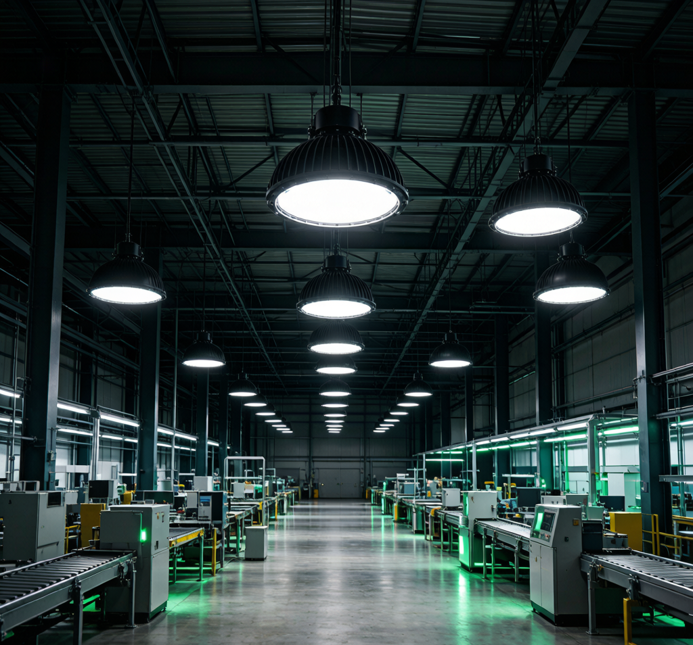
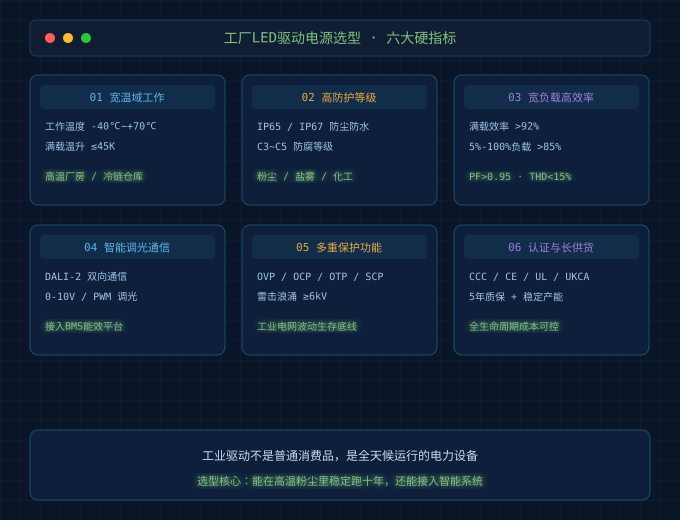
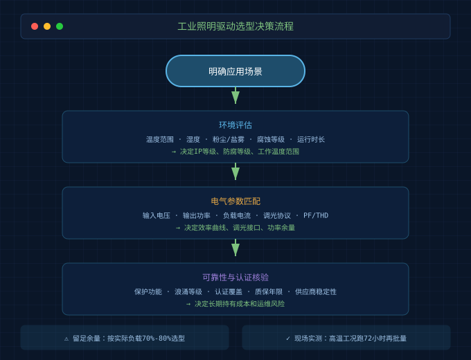

2026年过半，LED照明行业交出一份"冷热交织"的成绩单。
一边是通用照明市场持续内卷，出口压力不减；另一边是工业照明异军突起——AI数据中心建设加速、智能工厂改造铺开、国防与能源基础设施投资增加，工业照明已成为今年LED行业最确定的增长极之一。
但热闹背后有个被忽略的真相：很多工厂的照明系统仍在用"全开全关"的方式运行。没人作业的产线、深夜的仓库通道、节假日的办公楼走廊，灯照样满功率亮着。业内估算，这种"空转损耗"占工厂总照明能耗的40%-60%。
工业照明正在从"节能减负"走向"智能增效"。而这场升级的核心，不是灯珠，不是外壳，而是藏在灯具里的LED驱动电源。
为什么工业照明对驱动电源要求更高？
工业场景和家居、商业场景完全不同。
家居灯一天开三五个小时，温湿度宜人，灰尘可控。工厂则是另一番景象：高棚厂房夏天顶部温度轻松超过50℃，焊接车间烟尘弥漫，冷链仓库零下二三十度，港口码头盐雾腐蚀严重。灯具一旦装上去，更换一次要搭脚手架、停产配合，成本远超灯具本身。
所以工业照明的驱动电源，本质上是一台全天候运行的电力设备，而不是普通消费品。它的可靠性直接决定：灯会不会提前光衰、会不会半夜罢工、会不会引发安全事故。
2026年工厂照明升级的三大技术推力
第一，AI数据中心与智能工厂拉动需求。 新建的超算中心、无人工厂、黑灯仓库对照明的连续性要求极高，一次非计划熄灯可能意味着产线停摆或数据服务中断。
第二，24G毫米波雷达与DALI 2.0物联组网普及。 新一代工业照明可以通过存在感应实现"人来灯亮、人走灯暗"，通过DALI总线实现单灯寻址、能耗监测和预测性维护。
第三，能效与碳管理成为硬约束。 越来越多工厂把照明能耗纳入ESG报告和碳核算，驱动电源的效率数据不再只是技术参数，而是财务指标。

工厂LED驱动电源选型6个硬指标
1. 宽温域工作能力
普通驱动电源标称工作温度通常是-20℃~+50℃，在工业厂房夏天顶层或户外暴晒场景下会频繁触发过温保护，甚至直接宕机。
工业级驱动应满足**-40℃~+70℃甚至更宽**的工作温度范围，且满载温升控制在合理区间。选型时重点看两个参数：一是标称工作温度范围，二是T-Case Lifetime（壳温寿命）——例如T-Case 70℃下寿命是多少小时，这直接反映热设计余量。
2. 防护等级与耐腐蚀能力
工业环境的敌人不只是水，还有粉尘、油污、盐雾和化学气体。
普通室内驱动IP20即可，但厂房、仓库、装卸区通常需要IP65以上；户外、港口、水产加工等场景建议IP67。除了IP等级，还要看防腐等级（C3/C4/C5）。沿海或化工环境下，C5-M防腐能力才是刚需。
别只看参数表里的IP数字，外壳结构、线缆密封、灌胶工艺同样关键。一个密封圈老化失效，IP67也会变IP20。
3. 高转换效率 + 宽负载高效率
工业照明往往是24小时或长时段运行，效率差1个百分点，一年电费差距就很可观。
2026年主流工业驱动效率已普遍超过92%，功率因数（PF）大于0.95，谐波失真（THD）小于15%。但更要看的是宽负载高效率——智能调光场景下，灯具常在20%-50%亮度运行，如果驱动在低负载下效率暴跌，节能效果会被吃掉一大半。
好的工业驱动应在5%-100%负载范围内保持85%以上效率，而不是只在满载时漂亮。
4. 智能调光与预测性维护
"智能增效"不是换个感应器就完事，驱动电源必须能听懂系统指令。
工业场景优先选择支持DALI-2或0-10V/PWM调光的驱动。DALI-2的优势不只是调光，而是双向通信：系统可以读取每盏灯的电流、电压、温度、运行时长，提前发现驱动过热、电流漂移等异常，在故障发生前安排维护。
这比"坏了再修"省钱得多。一个高棚灯故障，搭脚手架、停产、人工更换，单次成本可能是灯本身的好几倍。
5. 完整保护功能
工业电网的波动比民用电网大得多，雷击、浪涌、谐波都是家常便饭。驱动电源必须内置多重保护：
- 过压保护（OVP）：抵御电网电压突升
- 过流保护（OCP）：防止负载异常损坏
- 短路保护（SCP）：短路时快速切断，避免扩大事故
- 过温保护（OTP）：温度过高时自动降额或关断
- 雷击浪涌保护：建议达到6kV线对线/6kV线对地以上
这些保护不是锦上添花，是工业场景里的生存底线。
6. 认证体系与长期供货能力
工业项目周期长、更换成本高，驱动电源的认证和供应商稳定性必须过硬。
认证方面，国内项目必须有CCC，出口项目需要CE/ENEC/UL/UKCA，特定场景还要满足CB或BIS。不要只看厂家有没有证书，要核对证书覆盖的型号和有效期。
供应商方面，优先选择能提供5年质保、有自主研发能力、产能稳定的厂家。工业照明项目一旦交付，后续5-10年都要用同一型号或兼容型号，供应商中途停产会让运维变成噩梦。

给采购和工程师的落地建议
先定义场景，再选参数。 同样是工厂，电子洁净车间、钢铁热轧车间、冷链仓库、港口码头对驱动的要求天差地别。先搞清楚环境温度、湿度、粉尘、腐蚀等级、每天运行时长，再按6个指标去筛。
留足功率余量。 工业驱动不建议长期满载运行，建议按实际负载的70%-80%选型。满载长期运行会加速电容老化和温升，缩短寿命。
现场实测别偷懒。 拿到样品后，在接近实际工况的环境下跑满72小时，测壳温、输出电流漂移、是否存在低频频闪。参数表是实验室数据，现场才是真实考场。
写在最后
2026年的工业照明，已经不是"把灯点亮"那么简单。它正在成为工厂能耗管理、安全生产、碳核算的数字化入口。
对LED驱动电源厂家来说，竞争焦点也从"瓦数多少、价格多低"转向"能不能在高温粉尘里稳定跑十年、能不能接入智能系统、能不能提供可预测的运行数据"。
对采购和工程师来说，选对一款工业驱动，省下的不只是电费，更是停工损失、维护成本和半夜被电话吵醒的麻烦。
NEXLAMP — 智能照明驱动电源专业供应商。支持TRIAC / 0-10V / DALI / Zigbee全协议调光驱动，为工业、商业、家居照明提供高可靠性电源解决方案。
联系人：刘先生 电话：13825496855 官网：www.nexlamp.com